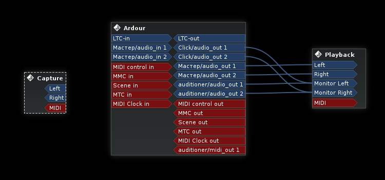

Будет использоваться менеджер Claudia, который позволяет объединять несколько программ в сохраняемых проектах. Claudia можно запустить из вкладки Tools в Cadence (окно Cadence после этого можно закрыть). Большая часть работы ляжет на DAW Ardour 4, но помимо него будут использоваться и некоторые другие программы, которые, как и связи между ними, желательно запоминать для последующих запусков.

Итак, откроем Claudia и создадим новую студию под названием Музыка. Добавим две комнаты: основную с названием Пульт и дополнительную с названием Эксперименты, для обеих используем шаблон Basic. В первой будет развиваться чистовой проект, а во второй можно создавать звуковые эффекты, паттерны и прочее - с последующей записью результата в DAW основной комнаты. Запустим студию. Перезапустить мост ALSA MIDI можно из меню Tools.
Теперь комнаты надо соединить. На следующем рисунке виден принцип подключения входов-выходов студии:
Сохраним созданную студию. Впоследствии можно добавлять или удалять комнаты, менять связи между ними, все правки будут запоминаться с сохранением студии.
Проекты Claudia хранит в XML-файлах, и их можно загружать по одному в ту или иную комнату студии. В файловом менеджере создадим папки для файлов композиции. Пусть корневой папкой, в которой хранятся все наши данные будет путь Audio/Composition относительно домашней. Каждмому проекту требуется отдельная дочерняя папка, создадим две: Main и Experiments. Добавим ещё одну для сторонних семплов: Samples. Все пути файлов лучше писать латиницей и без пробелов.
Перейдём в основную комнату, выбрав Пульт из списка слева. Создадим новый проект для этой комнаты через меню (Project/New Project. В первом поле диалога укажем полный путь к папке проекта (/home/%username%/Audio/Composition/Main), название - Основной проект. Проект можно периодически сохранять (Ctrl+S) - после добавления новых программ или изменения соединений.
Наконец, запустим несколько программ. За основу нашей студии возьмём DAW Ardour версии 4. Для запуска Ardour в проекте:
ardour4 Composition ("Composition" - это имя сессии Ardour, которая будет сохранена в отдельной поддиректории проекта).Ardour.При первом запуске Ardour сообщит, что такой сессии ещё не существует, поэтому нужно её создать:

Вернёмся в Claudia и в окне комнаты Пульт подключим Ardour, как на рисунке:
Функции редактирования MIDI хоть и присутствуют в Ardour, но не очень удобны, особенно при введении нот мышкой. Там нет отдельного окна для матричного редактора (пиано-ролл), и всё приходится редактировать в одной куче в главном окне. Поэтому для редактирования MIDI лучше использовать какой-нибудь другой, внешний редактор. Он будет находиться в экспериментальной комнате, а его выход MIDI мы будем записывать на дорожки Ardour.
Для Linux существует несколько полноценных секвенсоров (большинство из них с поддержкой функций DAW, конечно, но нас интересует именно секвенсорная часть).
Выберем комнату Эксперименты в Claudia, создадим "Дополнительный проект" c путём /home/%username%/Audio/Composition/Experiments. Нажав Shift+F2, на вкладке DAW выберем приложение Rosegarden. Rosegarden поддерживает LADISH Level 1, а значит его данные будут сохраняться при сохранении проекта Claudia. Мы не использовали этот диалог для запуска Ardour, потому что нам требовалось указать название сессии. Подключим входы и выходы MIDI. Если они не отображаются, значит нужно запустить мост через меню Tools/ALSA-MIDI Bridge/Start Bridge.

Настроим использование транспорта JACK. Это позволит синхронизировать Rosegarden с Ardour.
Чтобы Ardour не получал MIDI-ноты дважды, обязательно нужно отключить MIDI Thru, убрав галочку с меню Студия/Сквозная маршрутизация MIDI.
Сохраним сессию в Ardour и проекты в каждой из комнат Claudia.